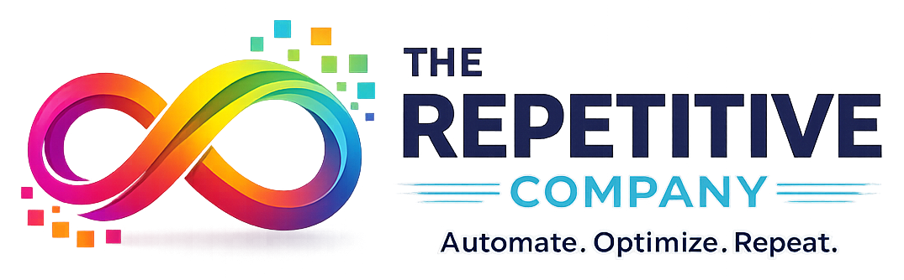
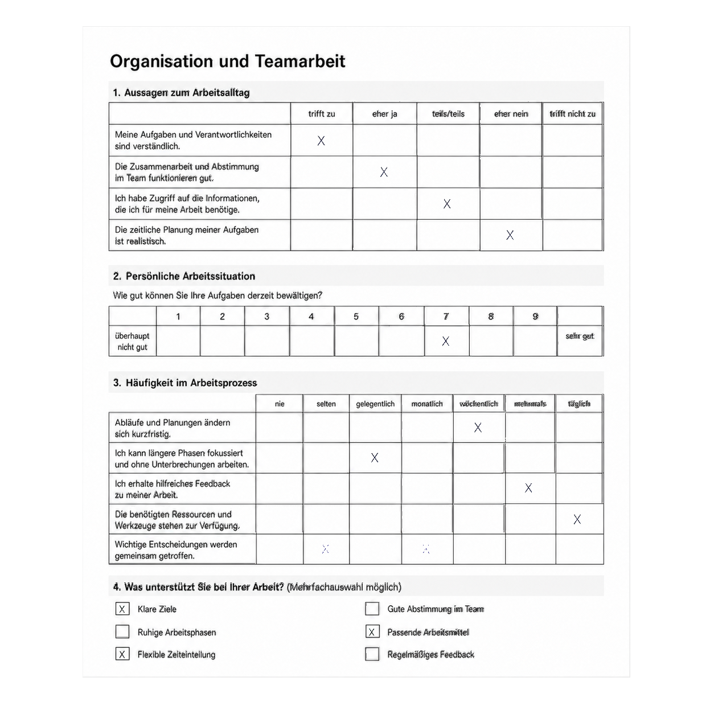
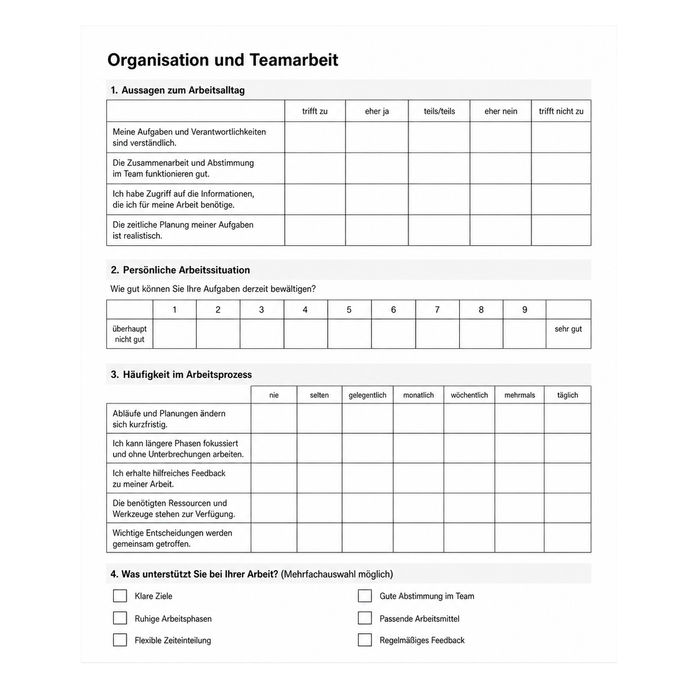

Einfachklick
Ein Feld manuell bestätigen oder ändern. Die Auswahl wird dargestellt.

Kernanwendung des Komplettpakets
DataTool erkennt markierte Antworten, Mehrfachauswahlen und Kommentare. Klare Ergebnisse werden direkt übernommen, auffällige Angaben gezielt zur Kontrolle vorgelegt.

Vom Original zum Datensatz
Ausgefüllte Fragebögen werden anhand des zuvor eingerichteten Templates ausgerichtet und ausgewertet. Eindeutige Markierungen können direkt übernommen werden. Mehrfachauswahlen, widersprüchliche Angaben oder andere auffällige Ergebnisse werden farblich am Original hervorgehoben und gezielt zur Prüfung angeboten. Kommentare und Freitextbereiche bleiben ebenfalls mit dem jeweiligen Dokument verbunden, sodass der inhaltliche Zusammenhang erhalten bleibt.
Korrekturen erfolgen unmittelbar in der Dokumentansicht. Dadurch behalten Sie die volle Kontrolle über jede Antwort, ohne zwischen Papier, separaten Listen und Tabellen wechseln zu müssen. Welche Antwortwerte und Konfliktkennzeichnungen ausgegeben werden, lässt sich passend zum verwendeten Fragebogen festlegen. Nach der Prüfung stehen die strukturierten Ergebnisse für Tabellen, Statistikprogramme, Dokumentationen und weitere lokale Arbeitsschritte bereit.
Template selbst ausprobieren
Legen Sie direkt am leeren Fragebogen fest, welche Antwortbereiche DataTool später auslesen soll. Die geführte Übung bildet die wichtigsten Schritte des echten Template-Modus nach.

Im Komplettpaket enthalten